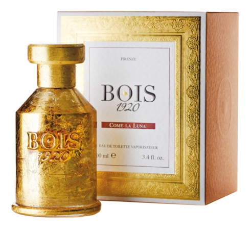

BOIS
Парфюмерия Bois 1920 (Бойс 1920) находится на пике популярности среди ценителей прекрасного со всего мира. Духи Bois 1920 – воплощение жизнерадостной прекрасной Италии. Они струятся легким ветерком, свежестью и прохладой, постепенно превращаясь в горячее дыхание чувственности и страсти. Головокружительное сочетание непревзойденных ароматов Bois 1920 дарят ощущение роскоши и превосходства, блаженства и истинного наслаждения непревзойденным сочетанием ароматов, легкой вуалью покрывают тело своего владельца. Bois 1920 – один из старейших парфюмерных домов современности. В название бренда входит цифра 1920, которая символизирует год основания. Почти сто лет назад итальянский парфюмер Гуидо Галарди открыл свою парфюмерную лавку, расположенную во Флоренции по адресу Bottega Italiana Spigo. В честь названия этой улицы именовался и сам бренд. Именно Bottega Italiana Spigo, под таким именем Европа знала духи Бойс 1920. Гуидо Галарди обладал необычным даром – он в точности распознавал состав духов, едва учуяв их аромат. Изначально вся парфюмерная линия духов Bois 1920 основывалась на нотах лаванды, так как этот цветок в избытке рос на территории Флоренции. В 1925 году, парфюмерный бизнес унаследовал саны основателя торгового дома Ренато, которому быстро это дело наскучило, и он решил прекратить производство парфюмерии. Семейный бизнес был остановлен полностью более чем на полувековой период, до тех пор, пока внук Гуидо Галарди Энцо не решился восстановить семейные традиции и труды деда. В возрасте тринадцати лет Энцо отправился на специальные курсы изучать технику создания парфюмерии и уже к сознательному возрасту мог похвастаться своей маленькой коллекцией. Энцо с большим энтузиазмом отнесся к этому ремеслу и в 2005 году представил миру обновленный семейный бренд Bois 1920, названия которого стало аббревиатурой от предыдущего имени Bottega Italiana Spigo и год основания бренда. Новую марку Энцо посвятил своему дедушке Гуидо Галарди. Основываясь на оригинальных формулах, созданных еще в 1920 году, Энцо разработал современные ароматы, явив миру свою собственную интерпретацию парфюмерных решений деда. При всем этом парфюмы Bois 1920 это исключительно натуральные компоненты, и полностью выдержанные классические каноны парфюмерного искусства. Духи Bois 1920 – это вершина мастерства и глубина роскоши!
